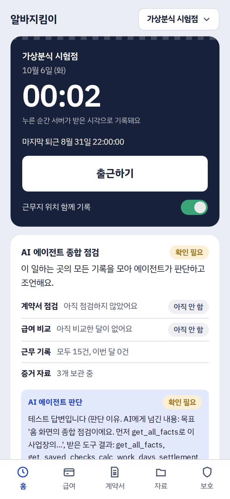
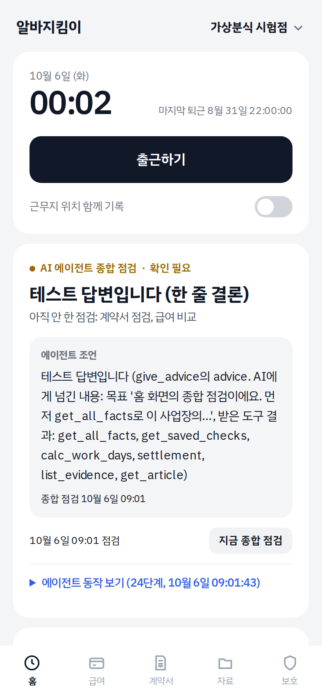

최저임금, 주휴수당, 휴게시간, 야간근로 제한, 퇴직 후 14일 안 지급을 몰라 체불을 늦게 알아챕니다.
02
증거를 모을 줄 모릅니다
출퇴근 시각, 계약서, 명세서처럼 무엇을 남겨야 하는지 몰라, 막상 상담하려 해도 근거가 없습니다.
03
보복이 두렵습니다
신고한 뒤의 위협이나 소문이 걱정돼 정당한 권리를 포기합니다.
26만 건
청소년·청년근로권익센터에 2026년 6월까지 접수된 상담. 그중 60% 이상이 20대 초반 이하의 청소년과 청년입니다. 고용노동부 자료 (참가신청서 인용)
2
Agent 설명 · 목표와 핵심기능
기록만 남기면 에이전트가 스스로 점검합니다
Goal 근무 기록을 법 기준표와 대조해 조항마다 정상 · 확인 필요 · 위반 의심을 근거와 함께 판단하고, 알림과 상담 준비, 신고 후 보호까지 이어 준다
근무 기록과 증거 보존
서버 시각 출퇴근, 원본 그대로 저장과 SHA-256
계약서 · 근무 점검
사진 읽기, 근무일별 만 나이로 적용 조항 가리기
급여 비교와 퇴직 정산
코드가 계산한 임금과 받은 금액 비교, 14일 기한
AI 에이전트 종합 점검
모든 기록 종합, 판단 · 조언 · 질문 · 예약, 매일 9시
상담 자료와 신고 후 보호
상담 사전 자료, 보복 금지 안내, 게시물 판별 · 보존
대상 사용자
만 15~18세 청소년 아르바이트생 · 보호자 · 청소년근로권익센터 등 상담 기관
역할 분담
코드 시간 · 임금 · 만 나이 · 기한 계산, 기록 저장, 알림 · AI 도구 선택, 조항 판단, 사진 읽기(OCR), 글쓰기 · 검증 장치 AI 판단을 계산과 법 기준표로 재확인
3
구조 · Workflow, AI, Tool, Data, Memory
AI가 도구를 고르고, 코드가 실행하고, 검증합니다
Memory는 시작할 때 목표와 함께 AI에게 보내고, 실행 중에는 AI가 도구로 저장합니다. 반복은 최대 30회, LangChain 같은 프레임워크 없이 vLLM tool calling으로 직접 구현했습니다.
4
AI Agent 인정기준 6요소 (운영규정 제17조)
6요소를 모두 실제 동작으로 구현했습니다
요소
알바지킴이에서
Goal
점검마다 목표만 받고 무엇을 확인할지 스스로 정함 (계약서, 급여, 퇴직, 신고 후 보호, 종합 점검)
Planning
도구를 쓰기 전에 make_plan으로 할 일을 세우고, 결과를 보며 계획을 고침
Reasoning
조항마다 정상 · 확인 필요 · 위반 의심을 근거 조항과 사실로 판단, 정보가 없으면 묻거나 확인 필요
Tool Use
도구 32개, 법제처 API, DB, 사진 읽기(계약서·명세서·공고, 비전 모델이 직접 OCR)를 실제 호출
Memory / State
시작할 때 지난 메모 · 질문과 답 · 예약한 확인 · 진행 상황을 함께 보내고, 실행 중 remember · ask_user · schedule_followup으로 저장
Feedback
검증 장치가 돌려보내면 다시 판단(최대 2회), 사용자가 답하면 그 점검을 다시 시작, 예약한 날 다시 확인
묻지 않아도 매일 9시와 예약한 날에 스스로 점검하고 알림 · 질문 · 예약 같은 행동을 합니다. 단순 질의응답 챗봇이 아닙니다.
5
모델 선정 시험 · 같은 앱 코드와 가상 알바 5곳의 데이터셋
후보 9개를 같은 시험으로 비교해 Qwen3.8-27B를 골랐습니다
모델
13번의 점검 10번 안에 마침
기능을 안 부름 / 불러야 한 요청
AI 판단 같음 / 확인 필요 / 반대 (코드 결론이 정해진 항목)
계약서 사진
명세서 사진
가장 긴 응답
한글 비율
Qwen3.8-27B (선정)
13/13
0 / 51
12 / 5 / 0 (17개 중)
27/28
15/15
14.8초
0.9
Qwen3-VL-30B-A3B (이전 모델)
13/13
4 / 114
15 / 2 / 0 (17개 중)
28/28
15/15
4.2초
0.9
Gemma 4 31B
13/13
0 / 41
15 / 2 / 0 (17개 중)
28/28
14/15
12.5초
0.8
Llama 4 Scout
10/13
43 / 112
7 / 2 / 0 (9개 중)
26/28
15/15
9.5초
0.6
EXAONE 4.5 33B
8/13
50 / 120
10 / 3 / 0 (13개 중)
0/28
0/15
51.3초
0.6
GLM-4.6V
7/13
30 / 106
5 / 1 / 0 (6개 중)
15/28
12/15
3.6초
0.9
HyperCLOVA X SEED 32B
0/13
130 / 130
판단 없음
28/28
15/15
5.0초
0.5
후보 9개 중 Mistral Small 4와 Qwen3.5-122B는 서버에서 켜지지 않아 7개를 비교했습니다. 판단의 '확인 필요'는 코드가 정상이나 위반 의심으로 본 항목을 AI가 확인 필요로 판단한 수, 사진은 맞힌 항목 수입니다. 법 기준표를 넣기 전에 한 번 실행했습니다.
6
성과
정답 사례에서 위반 의심을 하나도 놓치지 않았습니다
0/13
위반 의심 누락
0/9
정상 사례 오탐
100%
급여 계산 일치 (8/8)
대표 Test Case
검증 장치 결과
① 행복편의점
수습 감액 요건 미충족 · 청소년 야간근로 퇴직 정산 기한 10/11
② 가상분식
청소년 야간근로 · 124,872원 적게 받음
③ 가상카페
최저임금 · 급여 정상 (업종의 청소년 고용 가능 여부만 확인 필요)
④ 가상베이커리
계약서 · 동의서 없음 모르는 정보는 추측 없이 확인 필요
⑤ 가상치킨
휴게 없음 · 퇴직 후 지급 기한 지남 → 신고 후 보호
누락 · 오탐은 AI 판단을 검증하는 코드 규칙 기준 (python -m evaluation.run). 실제 모델의 판단 정확도는 아직 따로 재지 않았습니다.
7
데이터 · 안전 · 윤리
숫자는 코드가, 판단은 AI가, 확인은 다시 코드가
AI 오류 대비
법 조항은 법제처 API로 만든 법 기준표에서만, 기준값은 출처와 함께
정보가 없으면 추측하지 않고 확인 필요
AI 판단은 검증 장치가 계산 · 법 기준표와 대조
AI 글의 링크 · 가짜 전화번호 · 한자 · 내부 이름은 다시 쓰게 함
보안과 개인정보
사용자가 적은 글 속 지시는 따르지 않음 (프롬프트 인젝션 대비)
다른 사용자 기록에 접근 불가 (사용자 번호는 코드가 고정)
증거는 원본 그대로, 위치는 동의한 경우만
로그인 시도 제한, 비밀키는 저장소에 없음, 시험 데이터는 가상
결과는 법적 판단이 아닌 참고용이며, 판단이 어려운 항목은 확인 필요로 두고 상담을 안내합니다.
8
핵심 구현 · 실제 모델로 부딪힌 문제
문제를 구조로 풀었습니다
모델 선정: 후보 9개 → Qwen3.8-27B
같은 시험으로 속도, 도구 호출, 판단, 사진 읽기, 한국어를 비교
100초에 끊기는 요청
AI 점검은 서버가 뒤에서 실행하고, 화면은 작업 번호로 결과를 물음
AI 글의 품질
잘린 글, 한자, 내부 이름은 몰래 고치지 않고 AI가 다시 쓰게 함
사용자 의견 반영: 미니멀 디자인
요즘 디자인 흐름인 미니멀한 화면이 좋겠다는 의견을 반영해 고쳤습니다. 어두운 카드와 색 알약 대신 흰 카드와 여백, 검정 주 버튼, 색 점 상태로 바꾸고, 종합 점검은 한 줄 결론을 맨 위에 둡니다.

변경 전→

변경 후
기존자산: 오픈소스 라이브러리, vLLM, Qwen3.8, 법제처 API · 신규개발: 앱 전체 (대회 전 코드 없음, 첫 코드 커밋 9/29)
9
예비 사용자 설문 · 한계 · 발전계획 · 비즈니스 모델
사용자 의견으로 다음 기능을 정했습니다
예비 사용자 설문 10/5 · 3명 (만 15~17세 1, 만 18~19세 2 · 알바 경험 없음 · 하는 중 · 해 본 적 있음 각 1) · 5점 만점, 3명 평균
4.3결과와 이유 이해
4.7질문 · 조언이 상황에 맞음
5.0대응 · 도움받을 곳 알게 됨
4.7증거가 남아 안심
5.0신고 후 걱정 줄어듦
4.3쓸 생각
가장 도움이 된 기능“임금이 제대로 지급됐는지 안 됐는지 확인할 수 있는 기능” · “어떤 부분이 법적으로 위반되는 내용인지 알려 줌. 몰랐던 것도 알게 됨”
있었으면 하는 기능“그 아르바이트 장소에서 알바를 해 본 다른 사람들의 후기? 한줄평?” · “실시간으로 출근 기록을 못 하거나 위치 오류로 기록되지 않았을 때 설정하는 기능 … 실제로 사용된다면 정말 유용할 것 같음”
헷갈린 등록 항목수습 기간 · 급여에서 떼는 돈 · 사업자등록번호 · 보호자 동의서 써 본 기능3명 모두 계약서 사진 점검 · 급여 점검 · 상담 사전 자료 오류 · 불편없음